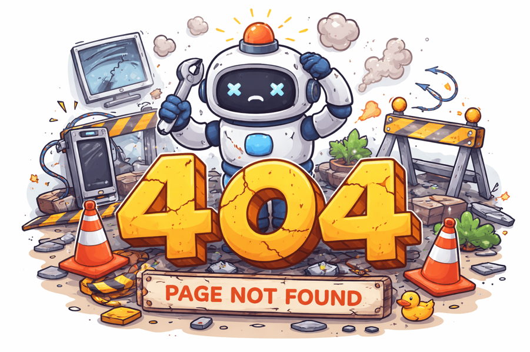

<!DOCTYPE html>
<html lang="en">
<head>
    <meta charset="UTF-8">
    <meta name="viewport" content="width=device-width, initial-scale=1.0">
    <title>Como evaluar Errores</title>
    <style>
         body {
        display: flex;
        justify-content: center;
        align-items: center;
        height: 100vh;
        margin: 0;
        font-family: Arial;
      }

      .success {
        font-size: 24px;
        color: green;
        text-align: center;
      }

      img {
        max-width: 300px;
      }
    </style>
</head>
<body>
    <!-- Vamos a crear una funcion y le pasamos el parametro una funcion si no recibe como argumento una funcion lanzara un error. -->
     <div id="app"></div>
     <script>
      function siteComponent(func) {
        return func();
      }

      const widget = () => {
      
        return `<div class="success">Todo ha salido bien</div>
                <div class="error"></div>` ;
      };

      try {
        const result = siteComponent(widget);
        document.getElementById("app").innerHTML = result;

      } catch (error) {
        document.getElementById("app").innerHTML =
          '<div class="error"></div>';
      }
    </script>
    
</body>
</html>
   